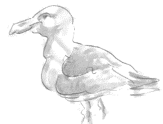

 Y'a bein d's années jé fis un seurvais des nids d'mauves, lé "goéland argenté en Fr. (Larus argentatus), lé tou des côtes dé l'Île. Ch'la ch'tait devant la dreine dgèrre; et jé l'fis, chenna, comme i' faut deux ans d'affi, pouor compathaison. Ché n'fut pon du tout aîsi, car à part du dangi à ramper dans les falaises i' fallit saver s'y prendre. Y'a à bein des bords, par exempl'ye, des droques dans ches falaises où'est qu' nou n'peut dgéthe arriver pouor compter les nids. Eh bein, man système fut dé jouôter des pièrres du pus près pouor dêrober les mauves en l's êparpillant au vol en l'air. Comme ch'la étout, j'pus arriver aussi près qu' pôssibl'ye au compte dé la populâtion d'mauves en entchi. Jé savais qué quand les poules lus levaient du nid les mâles né restaient pon à tèrre ni n'tout. Là, don, j'comptais; et, en maintchillonnant l'nombre jé savais combein qué v'là tchi faîthait d'nids. Jé prouvis ch'la bein des fais, en faîthant la même chose dans les falaises où'est qué j'pouvais aller compter les nids autrément. Et pis, comme j'ai dit en c'menchant, jé fis chu seurvais deux ans d'affi, au r'nouvé, en mil neuf chent trente-six et mil neuf chant trente-sept, et mes chiffres la deuxième année accordaient à bein près auve les cheins dé l'année dé d'vant. J'ai souvent pensé d'publier chenna, mais v'là tch'a tréjous resté d'côté jusqu'à ch't heu, comme bein d'aut's choses. Enfin, v'là tchi f'tha un r'cord assez întérêssant, j'ose espéther, et p't-être qué tchitch'uns d'autre voudront y r'êprouver dans tchique dêtou. Là nou vèrrait s'i' y'a ieu grand changement dans eune affaithe dé pus d'trente ans. Jé m'souveins qué dans ches temps-là j'éthais bein voulu étout faithe un seurvais des cormouothans, mais i' fallit laissi couôrre l'idée pouor difféthentes raisons. Ch'éthait 'té bein pus difficile, car hardi d'ieux lus muchent dans des racoins, mais à part ch'la bein des piêches 'taient tithés quand v'nait lus temps à couer au r'nouvé, pouor faithe sèrvi d'bète dans les cliavieaux à honmards. Chein qu' j'appelons l'cormouothan est lé "cormoran huppé en Fr. (Phalacrocorax aristotelis). Y'a deux "colonies d'godes, ou pîngouîns comme nou l's appelle étout, au Co d'la Rocque à Ste. Mathie et au Nièr Godîn ("Le Noir Godin ") souos La Gabouothell'lie à St. Ou. Et lé seul lot d'poffins, du maîns tch'i' soulait y'aver, était tout près L'Creux Gabouothé étout. Quant ès pie-mathentes, j'en comptais dans les chînquante nids seulement, lé tou d'l'Île. Dans l'hivé i' s'affliotchaient pouor la niet lé tou d'la Rocco, dans l'ouêst. Né v'chîn à ch't heu lé récensement entouor les nids d'mauves, et jé pense qué ch'est la toute preunmié fais qué ch'la ait 'té fait et publié. Dithons enfîn qué les mauves font lus nids sus les côtes du nord dé l'Île sustout. A c'menchi d'Gros Nez
| Dans La Néthe Falaise | 8 à 10 nids |
| À l'entou d'La Cotte | 6 nids |
| Du P'tit Betchet au Grand Betchet | 8 nids |
| À La Pointe dé La Cave ès Fraudeurs | 1 nid |
| D'ilà jusqu'au Dou d'la Mé, încliu 16 dans L'Creux des Geônais | 32 nids |
| La Tête du Rocqu'sé, du côté du Dou d'la Mé |
10 nids |
| La Cranne du Rocqu'sé |
1 nid |
| Lé Grand Êcarceux | 0 nids | |
| Lé P'tit Êcarceux | 45 nids | |
| La Cranne et Lé Creux d'la Sloupe | 5 nids | |
| Souos L'Câté, à l'êst | 2 nids | |
| Lé Vaû Rouogi, et à gauche dé Rouoge Nez | 12 nids | |
| Dé La Pointe du Dou d'la Mé (Ste. Mathie) à La Pliaine | 75 nids | |
| Dé La Pointe dé La Pliaine à Souothé (Sorel) | 75 nids | |
| Dé L'Homme Mort (pâssé L'Hâvre Giffard) allant pouor lé ouêst d'La Belle Hougue | 15 nids | |
| Dé La Pointe dé La Haie Volet au P'tit Port | 25 nids | |
| Dans L'Bieau Valet | 2 nids | |
| Dans Les Githottes | 2 nids | |
| Sus La Tou (d'Rôzé), au ouêst | 1 nid | |
| Sus L'Nez du Dget | 1 nid | |
| Entre Rôzé et L'Dou d'la Mé | 2 nids | |
| Dé Nièr Mont à La Mouaie |
12 nids |
Viyiz étout: